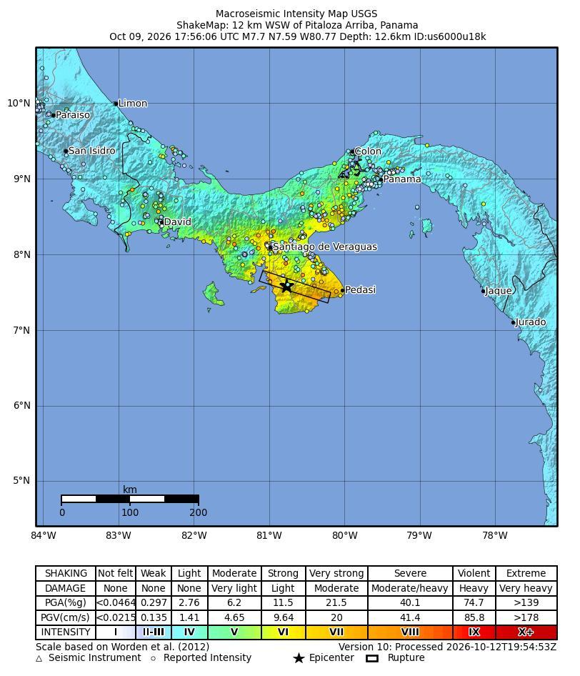
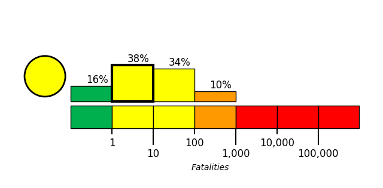
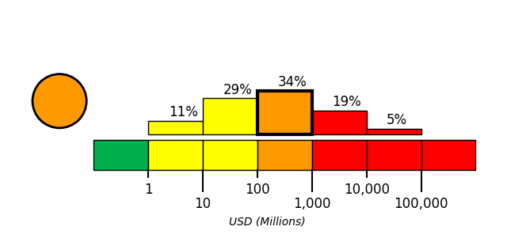

Changes since Snapshot 2
Snapshot 2 covers reports available by October 11, 17:00 UTC. This snapshot extends coverage to October 15, 16:00 UTC.
First reported death. A 68-year-old woman injured in the October 9 earthquake died on October 14, becoming the first officially reported earthquake-related death, according to EFE. [12]
Updated damage assessments. An October 14 TeleSUR report, crediting Panama’s presidency, reported at least 3,390 damaged homes, including 727 destroyed. UNICEF’s statement dated October 12 cited 656 damaged educational facilities. [2] [1]
Aid reaching communities. UNICEF estimated on October 12 that 38,000 people, including 8,300 children, needed humanitarian assistance. The U.S. Embassy reported on October 14 that three truckloads of U.S.-funded UNHCR supplies had reached affected communities, including Tonosí. [1] [14]
Updated PAGER estimates. The USGS PAGER economic-loss alert changed from red to orange; its most likely loss range shifted from US$1–10 billion to US$100 million–1 billion. The fatality alert remained yellow, with the most likely range shifting from 10–100 to 1–10. Snapshot 2 PAGER estimates; current estimates.
Canal and airport operations. An October 13 report described continued canal operations and normalised operations at major transport hubs, including Tocumen International Airport. The airport’s October 9 reopening was already covered in Snapshot 2. [10]
Introduction
On October 9, 2026, at approximately 12:56 local time (America/Panama; 2026-10-09 17:56 UTC), a magnitude 7.7 earthquake, with a reported depth of 12.647 km, occurred 12 km WSW of Pitaloza Arriba, Panama. The USGS epicenter was at 7.5868° latitude and -80.769° longitude.
Another strong earthquake followed near Río Grande at 15:25 local time (20:25 UTC) on October 9. USGS lists this event as magnitude 6.6; the Pacific Tsunami Warning Center reported a magnitude-6.9 estimate. USGS recorded a further magnitude-6.1 earthquake near Río Grande on Monday, October 12, at 18:20 local time (23:20 UTC).
Sequence sources: October 9 USGS event record; October 12 USGS event record.
Extensive diversity and complexity of tectonic regimes characterizes the perimeter of the Caribbean plate, involving no fewer than four major plates (North America, South America, Nazca, and Cocos). Inclined zones of deep earthquakes (Wadati-Benioff zones), ocean trenches, and arcs of volcanoes clearly indicate subduction of oceanic lithosphere along the Central American and Atlantic Ocean margins of the Caribbean plate, while crustal seismicity in Guatemala, northern Venezuela, and the Cayman Ridge and Cayman Trench indicate transform fault and pull-apart basin tectonics.
Along the northern margin of the Caribbean plate, the North America plate moves westwards with respect to the Caribbean plate at a velocity of approximately 20 mm/yr. Motion is accommodated along several major transform faults that extend eastward from Isla de Roatan to Haiti, including the Swan Island Fault and the Oriente Fault. These faults represent the southern and northern boundaries of the Cayman Trench. Further east, from the Dominican Republic to the Island of Barbuda, relative motion between the North America plate and the Caribbean plate becomes increasingly complex and is partially accommodated by nearly arc-parallel subduction of the North America plate beneath the Caribbean plate. This results in the formation of the deep Puerto Rico Trench and a zone of intermediate focus earthquakes (70-300 km depth) within the subducted slab. Although the Puerto Rico subduction zone is thought to be capable of generating a megathrust earthquake, there have been no such events in the past century. The last probable interplate (thrust fault) event here occurred on May 2, 1787 and was widely felt throughout the island with documented destruction across the entire northern coast, including Arecibo and San Juan. Since 1900, the two largest earthquakes to occur in this region were the August 4, 1946 M8.0 Samana earthquake in northeastern Hispaniola and the July 29, 1943 M7.6 Mona Passage earthquake, both of which were shallow thrust fault earthquakes. A significant portion of the motion between the North America plate and the Caribbean plate in this region is accommodated by a series of left-lateral strike-slip faults that bisect the island of Hispaniola, notably the Septentrional Fault in the north and the Enriquillo-Plantain Garden Fault in the south. Activity adjacent to the Enriquillo-Plantain Garden Fault system is best documented by the devastating January 12, 2010 M7.0 Haiti strike-slip earthquake, its associated aftershocks and a comparable earthquake in 1770.
Moving east and south, the plate boundary curves around Puerto Rico and the northern Lesser Antilles where the plate motion vector of the Caribbean plate relative to the North and South America plates is less oblique, resulting in active island-arc tectonics. Here, the North and South America plates subduct towards the west beneath the Caribbean plate along the Lesser Antilles Trench at rates of approximately 20 mm/yr. As a result of this subduction, there exists both intermediate focus earthquakes within the subducted plates and a chain of active volcanoes along the island arc. Although the Lesser Antilles is considered one of the most seismically active regions in the Caribbean, few of these events have been greater than M7.0 over the past century. The island of Guadeloupe was the site of one of the largest megathrust earthquakes to occur in this region on February 8, 1843, with a suggested magnitude greater than 8.0. The largest recent intermediate-depth earthquake to occur along the Lesser Antilles arc was the November 29, 2007 M7.4 Martinique earthquake northwest of Fort-De-France.
The southern Caribbean plate boundary with the South America plate strikes east-west across Trinidad and western Venezuela at a relative rate of approximately 20 mm/yr. This boundary is characterized by major transform faults, including the Central Range Fault and the Boconó-San Sebastian-El Pilar Faults, and shallow seismicity. Since 1900, the largest earthquakes to occur in this region were the October 29, 1900 M7.7 Caracas earthquake, and the July 29, 1967 M6.5 earthquake near this same region. Further to the west, a broad zone of compressive deformation trends southwestward across western Venezuela and central Colombia. The plate boundary is not well defined across northwestern South America, but deformation transitions from being dominated by Caribbean/South America convergence in the east to Nazca/South America convergence in the west. The transition zone between subduction on the eastern and western margins of the Caribbean plate is characterized by diffuse seismicity involving low- to intermediate-magnitude (M<6.0) earthquakes of shallow to intermediate depth.
The plate boundary offshore of Colombia is also characterized by convergence, where the Nazca plate subducts beneath South America towards the east at a rate of approximately 65 mm/yr. The January 31, 1906 M8.5 earthquake occurred on the shallowly dipping megathrust interface of this plate boundary segment. Along the western coast of Central America, the Cocos plate subducts towards the east beneath the Caribbean plate at the Middle America Trench. Convergence rates vary between 72-81 mm/yr, decreasing towards the north. This subduction results in relatively high rates of seismicity and a chain of numerous active volcanoes; intermediate-focus earthquakes occur within the subducted Cocos plate to depths of nearly 300 km. Since 1900, there have been many moderately sized intermediate-depth earthquakes in this region, including the September 7, 1915 M7.4 El Salvador and the October 5, 1950 M7.8 Costa Rica events.
The boundary between the Cocos and Nazca plates is characterized by a series of north-south trending transform faults and east-west trending spreading centers. The largest and most seismically active of these transform boundaries is the Panama Fracture Zone. The Panama Fracture Zone terminates in the south at the Galapagos rift zone and in the north at the Middle America trench, where it forms part of the Cocos-Nazca-Caribbean triple junction. Earthquakes along the Panama Fracture Zone are generally shallow, low- to intermediate in magnitude (M<7.2) and are characteristically right-lateral strike-slip faulting earthquakes. Since 1900, the largest earthquake to occur along the Panama Fracture Zone was the July 26, 1962 M7.2 earthquake.
References for the Panama Fracture Zone: Molnar, P., and Sykes, L. R., 1969, Tectonics of the Caribbean and Middle America Regions from Focal Mechanisms and Seismicity: Geological Society of America Bulletin, v. 80, p. 1639-1684.

Building Damage
Major impacts were reported in Veraguas, Coclé, Herrera and Los Santos. [1] An October 14 TeleSUR report, crediting Panama’s presidency, reported at least 3,390 damaged homes, including 727 destroyed. [2] UNICEF’s statement dated October 12, citing preliminary government reports, recorded 656 damaged educational facilities and damage to at least 25 health facilities. [1]
Building collapses were documented in Penonomé, and damage was reported in Soná. Xinhua photo captions described debris from damaged houses in Macaracas and Colorada Abajo, Los Santos, in photographs taken on October 13. [3][4]
Infrastructure Impact
Roads and bridges. On Monday, October 12, emergency officials reported that small communities remained isolated by damaged roads, bridges and landslides. [5][6]
Panama Canal. Reports quoting the Canal Authority described continued ship traffic and inspections of canal facilities. In an October 13 report, Barbados TODAY quoted Ambassador Amanda Martinez saying canal operations had continued throughout the emergency; the visitor centre had closed temporarily over the weekend. Physical damage to canal facilities remained unconfirmed in these reports. [9][10]
Tocumen International Airport. Flights were temporarily suspended as a precaution on Friday, October 9, and resumed later that day. Xinhua reported that inspections found no damage preventing operations from resuming, and that the airport would request further civil-protection inspections. An October 13 report described normalised operations across major transport hubs after safety assessments at the airport and the Colón Free Trade Zone. [8][3][10]
Metro. Lines 1 and 2 in Panama City were temporarily suspended for safety reasons on October 9. [7]
Resilience and Recovery
A 68-year-old woman injured in the October 9 earthquake died on Wednesday, October 14, becoming the first officially reported earthquake-related death. Earlier assessments had reported at least 27 injuries. [11][12][13]
UNICEF estimated on October 12 that 38,000 people, including 8,300 children, needed humanitarian assistance. It reported that classes were suspended on October 12 while structural inspections continued. UNICEF and the Ministry of Health deployed tents to maintain health services, and UNICEF made 16 tents available to health authorities. [1]
The government declared a national state of emergency to organize relief. An October 14 U.S. Embassy release reported that three truckloads of U.S.-funded UNHCR supplies had reached affected communities, including Tonosí, and that the final two truckloads had been dispatched. The five-truck mobilization comprised 33.7 tons of supplies intended to assist approximately 12,000 people. [14][15]
PAGER Estimates
The USGS PAGER fatality alert is yellow. The most likely fatality range is 1–10, with a probability of 38%.
The economic-loss alert is orange. The most likely loss range is US$100 million–1 billion, with a probability of 34%.


References
- [1] unicef.org - https://www.unicef.org/press-releases/over-8000-children-need-humanitarian-assistance-following-panama-earthquake
- [2] telesurenglish.net - https://www.telesurenglish.net/panama-thanks-venezuela-for-assistance-following-the-7-7-magnitude-earthquake
- [3] english.news.cn - https://english.news.cn/20261010/a871f733d15c46e7820db456d9a62584/c.html
- [4] english.news.cn - https://english.news.cn/20261014/040d9d0ab71947cd8477b2b756396d8b/c.html
- [5] ground.news - https://ground.news/article/dan-tri-360-houses-collapse-in-77-magnitude-earthquake-in-panama
- [6] ground.news - https://ground.news/article/small-communities-hit-by-earthquake-in-panama-are-still-isolated-and-unable-to-receive-aid
- [7] bhaskarenglish.in - https://www.bhaskarenglish.in/international/news/panama-earthquake-strikes-tsunami-warning-aftershocks-threat-139342188.html
- [8] freepressjournal.in - https://www.freepressjournal.in/world/magnitude-61-earthquake-strikes-panama-days-after-powerful-77-quake-country-grapples-with-aftershocks-and-damage
- [9] vietnam.vn - https://www.vietnam.vn/en/panama-trai-qua-hon-200-tran-du-chan-sau-dong-dat-manh-7-7-do
- [10] barbadostoday.bb - http://barbadostoday.bb/2026/10/13/barbados-embassy-remains-closed-after-panama-earthquake
- [11] trtworld.com:443 - https://www.trtworld.com:443/article/aa25d67d4a78
- [12] reutersconnect.com - https://www.reutersconnect.com/item/woman-injured-in-panama-earthquake-dies-marking-first-death-linked-to-the-quake/dGFnOnJldXRlcnMuY29tLDIwMjY6bmV3c21sX09XRUZWQzU1MDIxNjgzNzg4MDAx
- [13] enr.com - https://www.enr.com/articles/63895-earthquake-rattles-southern-panama-damaging-bridges-and-destroying-homes
- [14] pa.usembassy.gov - https://pa.usembassy.gov/united-states-and-unhcr-delivered-emergency-supplies-for-12000-people-affected-by-panama-earthquake
- [15] hamropatro.com - https://www.hamropatro.com/en/news/detail/4077464446093099-panama-declares-emergency-after-powerful-earthquake-another-tremor-recorded